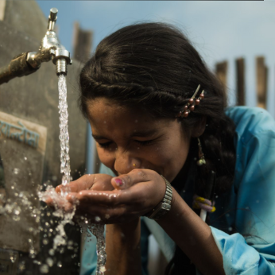

Water changes everything. Give the gift of clean, safe water. Your donation directly transforms lives. Allow yourself to see the incredible difference you make for those without access to safe drinking water.
GIVE100% of all public donations directly fund water project costs, and every dollar is proven with photos and GPS coordinates on Google Maps.
